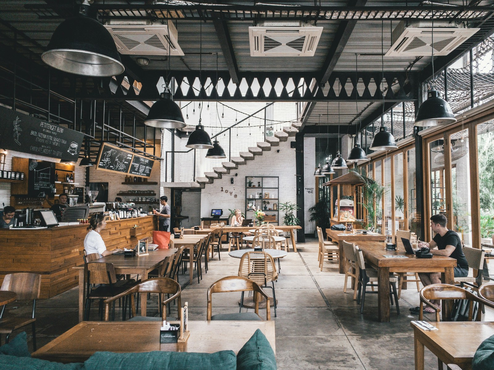
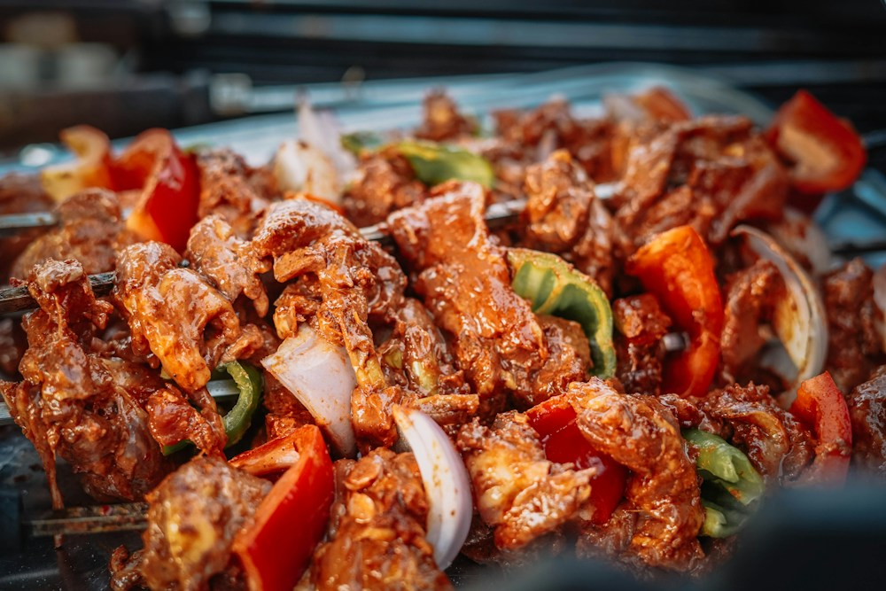
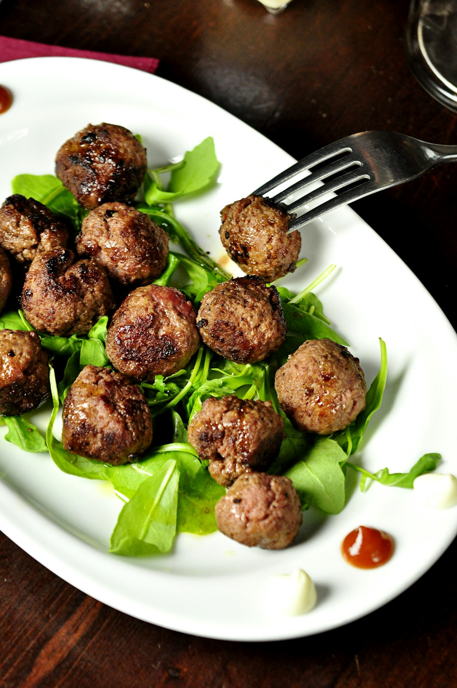
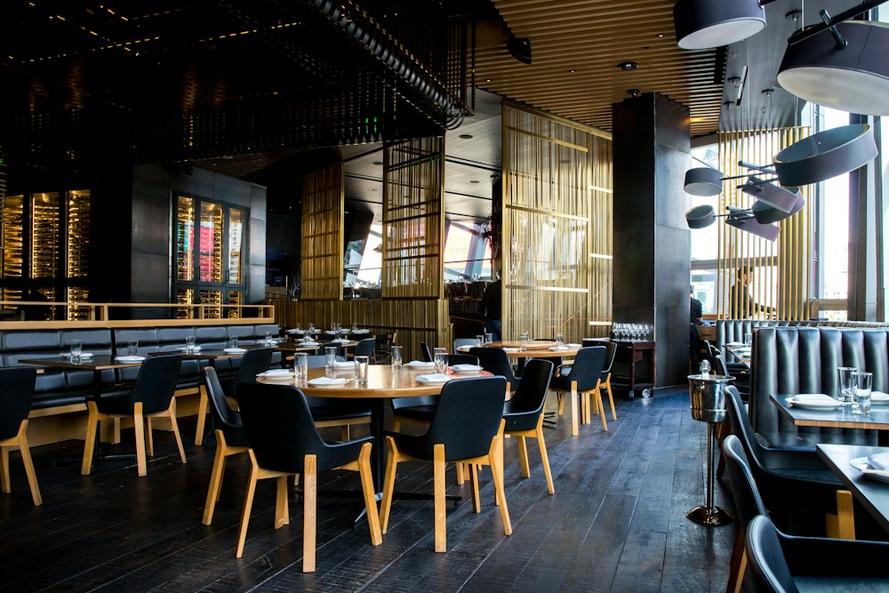

Imperdibile
Imperdibile
Genovese Napoletana
Cipolle dorate per 6 ore e manzo che si sfalda. Cremosa, dolce e avvolgente.
⏱ Cottura 6 ore
🥖 Da scarpetta

Genovese cotta 6 ore, parmigiana fumante nel coccio e polpette al ragù. Pochi tavoli raccolti a conduzione familiare: prenota ora il tuo posto.
Il Piatto Più Amato
La Nostra Genovese
Cipolle ramate caramellate piano e manzo tenerissimo che si scioglie sulla pasta.
Imperdibile
Cipolle dorate per 6 ore e manzo che si sfalda. Cremosa, dolce e avvolgente.

Servita nel coccioMelanzane dorate, ragù al basilico e fiordilatte campano filante appena sfornato.

Ricetta della nonnaMorbide, succose e tuffate nel ragù napoletano denso. Servite con pane cafone caldo.
 Fuori menu
Fuori menu
Tagliatelle fatte a mano, pasta e patate con provola e sfizi caldi dal mercato del mattino.
Niente menu turistici o piatti precotti: qui cuciniamo ogni mattina solo ciò che troviamo fresco al mercato, accogliendoti in una sala intima tra Vomero e Materdei.
Sughi tirati per ore e porzioni generose.
Sala calda in legno con posti limitati.
Qualità verace a un prezzo trasparente.

Posti LimitatiGuarda i fuori menu di oggi su Instagram: @canterburyosteria ↗
Valutazione reale 4,6 su 5: ecco cosa apprezzano di più i nostri ospiti.
Genovese cremosa, parmigiana filante e polpette morbidissime: cucina casalinga napoletana pura.
Gestione familiare gentilissima e porzioni abbondanti a circa 20–30 € a persona.
Il locale è raccolto e il menu è fresco di giornata: prenota su WhatsApp per assicurarti il tavolo.
📍 Piazza Leonardo, 18 — 80129 Napoli (NA)
🚇 Metro Linea 1: fermate Salvator Rosa o Quattro Giornate a pochi minuti a piedi.